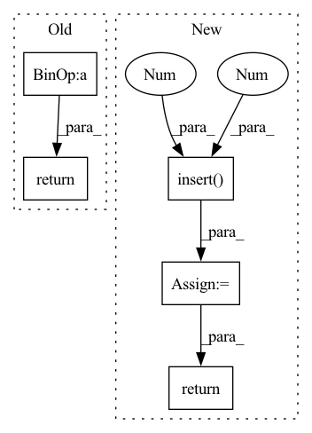

Pattern ID :27607

Before Change
self.final_theta = res.x
def predict(self, X):
prob = self.sigmoid(X @ self.final_theta)
return (prob >= 0.5).astype(int)
def cost(self, theta, X, y):
""" cost fn is -l(theta) for you to minimize"""
After Change
self.final_theta = self.init_theta
def predict(self, X):
X = np.insert(X, 0, 1, axis=1)
h_x = X.dot(self.final_theta)
y_pred = np.round(self.sigmoid(h_x))
return y_pred.astype(int)
def cost(self, theta, X, y):
""" cost fn is -l(theta) for you to minimize"""
In pattern: SUPERPATTERN
Frequency: 3
Non-data size: 5
Instances
Fragment ID: 81947138
Project Name: skylark0924/machine-learning-is-all-you-need
Commit Name: 70664ebeb2cc9974def25f368486c3fcac939951
Time: 2020-04-06
Author: 24936522+Skylark0924@users.noreply.github.com
File Name: 3Logisitc_Regression/3Logisitc_Regression.py
M Class Name: Skylark_LogisticRegression
N Class Name: Skylark_LogisticRegression
M Method Name: predict(2)
N Method Name: predict(2)
M Parent Class:
N Parent Class:
M File Name: 3Logisitc_Regression/3Logisitc_Regression.py
N File Name: 3Logisitc_Regression/3Logisitc_Regression.py
M Start Line: 22
M End Line: 23
N Start Line: 42
N End Line: 45
'>
Before Change
self.cost = cost_data
def predict(self, X):
Y = X*self.k+self.b
return Y
def batch_gradient_decent(self, theta, X, y, epoch, alpha=0.01):
"""
After Change
self.final_theta = X_T_X_I_X_T_X_T_y
def predict(self, X):
X = np.insert(X, 0, 1, axis=1)
y_pred = X.dot(self.final_theta)
return y_pred
def batch_gradient_decent(self, theta, X, y, epoch, learning_rate):
"""
'>
Fragment ID: 81947142
Project Name: skylark0924/machine-learning-is-all-you-need
Commit Name: af74b6d237df619c35542adc6065ab7a507ad306
Time: 2020-04-06
Author: 24936522+Skylark0924@users.noreply.github.com
File Name: 1Single_Linear_Regression/1Single_Linear_Regression.py
M Class Name: Skylark_LinearRegression
N Class Name: Skylark_LinearRegression
M Method Name: predict(2)
N Method Name: predict(2)
M Parent Class:
N Parent Class:
M File Name: 1Single_Linear_Regression/1Single_Linear_Regression.py
N File Name: 1Single_Linear_Regression/1Single_Linear_Regression.py
M Start Line: 38
M End Line: 39
N Start Line: 78
N End Line: 80
'>
Before Change
self.cost = cost_data
def predict(self, X):
Y = X*self.k+self.b
return Y
def batch_gradient_decent(self, theta, X, y, epoch, alpha=0.01):
"""
After Change
self.final_theta = X_T_X_I_X_T_X_T_y
def predict(self, X):
X = np.insert(X, 0, 1, axis=1)
y_pred = X.dot(self.final_theta)
return y_pred
def batch_gradient_decent(self, theta, X, y, epoch, learning_rate):
"""
'>
Fragment ID: 81947146
Project Name: skylark0924/machine-learning-is-all-you-need
Commit Name: af74b6d237df619c35542adc6065ab7a507ad306
Time: 2020-04-06
Author: 24936522+Skylark0924@users.noreply.github.com
File Name: 2Multiple_Linear_Regression/2Multiple_Linear_Regression.py
M Class Name: Skylark_LinearRegression
N Class Name: Skylark_LinearRegression
M Method Name: predict(2)
N Method Name: predict(2)
M Parent Class:
N Parent Class:
M File Name: 2Multiple_Linear_Regression/2Multiple_Linear_Regression.py
N File Name: 2Multiple_Linear_Regression/2Multiple_Linear_Regression.py
M Start Line: 38
M End Line: 39
N Start Line: 81
N End Line: 83